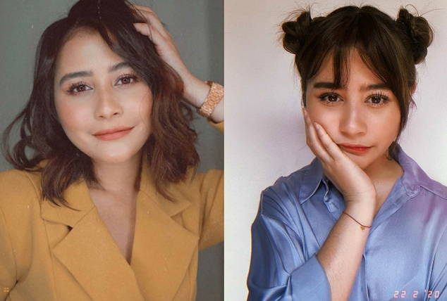

Ide gaya rambut ikal untuk wajah bulat
Cara keramas setelah rambut diwarnai agar warna rambut indah & tidak luntur

4 cara menggunakan bandana agar tetap terlihat stylish
Subscribe Sekarang Juga!
Konten terkait :
Cara Merawat Rambut Agar Tetap Sehat 10 Gaya Rambut yang Cocok untuk Wajah Bulat Rekomendasi Shampoo Anti Ketombe Tutorial Potong Rambut Sendiri Di Rumah Rekomendasi Cat Rambut yang Tidak Mudah Pudar 7 Hasil Warna Rambut Bleaching Berdasarkan Levelnya Copyright © 2022 beauty_haircare